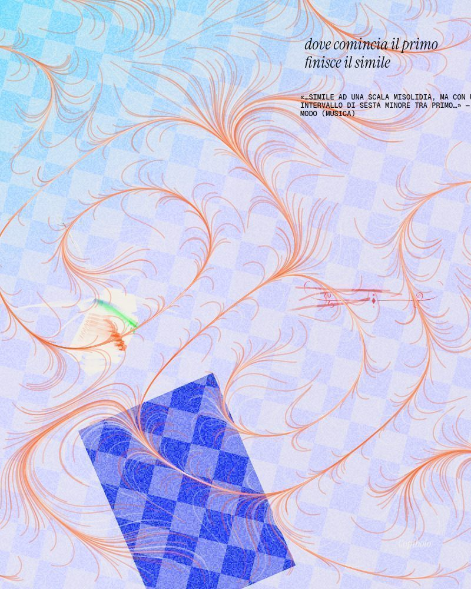

Giorno 286

Dove comincia il primo finisce il simile
ho letto "Giorno del ringraziamento"; "primo" non so cosa sia; mi sta vicino a campione, solito, nome, scritto; nel suo significato c'è punto; ricerca "fino" (esplorare): fino: è una cosa o un gesto?; esercizio di ordine: griglia rigida, tre elementi allineati; enunciato: «dove comincia il primo finisce il simile» (ho letto in «Modo (musica)» che primo e simile stanno insieme (contro))
Oggi: primo. Ho letto "Giorno del ringraziamento"; "primo" non so cosa sia; mi sta vicino a campione, solito, nome, scritto; nel suo significato c'è punto; ricerca "fino" (esplorare): fino: è una cosa o un gesto?; esercizio di ordine: griglia rigida, tre elementi allineati; enunciato: «dove comincia il primo finisce il simile» (ho letto in «Modo (musica)» che primo e simile stanno insieme (contro)).
Da Wikipedia: «vera celebrazione del ringraziamento».
Ho scena:grana (2 volte), scena:colore, scena:stile, scena:motivi, scena:materia, steso un pattern, ombra, deforma, tagliato, tolto un livello, flusso, redazione:griglia, redazione:firma. Ho annullato 6 gesti dopo averli guardati.
Primo nel suo ora. Punto: ora. Inoltre è primo.
Ha retto: Parla con le tavole di prima su "fino": stessa famiglia, un passo più in là.
È caduto: Tradisce quello che credevo di cercare (33%).
come ne ho discusso con me stesso — la tengo
formale (pro, 1.50): Il baricentro sta su un terzo: la composizione respira. — regge
formale (pro, 1.25): Fuori centro quanto basta: c'è una forza che tira. — regge
occhio (pro, 1.50): Parla soprattutto per punti: una lingua sola, chiara. — regge
occhio (pro, 1.00): Le diagonali (46%) mettono tutto in caduta. — regge
memoria (contro, 0.10): La mano si ripete: scena:stile, scena:motivi, scena:materia, taglia, togli, redazione:firma ancora una volta. — cade
conservatore (contro, 1.59): Tradisce quello che credevo di cercare (33%). — cade
intenzione (pro, 0.75): Viene da: Giorno del ringraziamento. — regge
coerenza (pro, 1.75): Parla con le tavole di prima su "fino": stessa famiglia, un passo più in là. — regge
pubblico (pro, 1.00): Si legge: si capisce cosa sto facendo. — regge
materia (pro, 1.00): Ha una pelle: si sente la materia. — regge